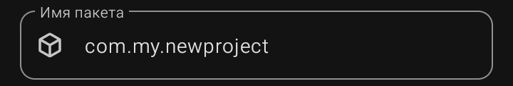

Имя пакета (Package Name) — уникальный технический идентификатор приложения в системе Android и в Google Play. По нему система отличает твоё приложение от миллионов других, а магазин проверяет уникальность при загрузке.
Поле расположено третьим блоком сверху, с подписью «Имя пакета» в верхнем левом углу рамки и иконкой куба слева. Внутри — серая подсказка вроде com.my.newproject2.
Формат имени пакета
· Состоит из латиницы, цифр и точек.
· Пробелы, кириллица, дефисы, подчёркивания в начале — запрещены.
· Минимум две части, разделённые точками.
· Обычно пишется в обратном порядке домена: com.<автор>.<название>.
Пример: com.rasnikgal.manulist.
Из чего состоит
·
com
— тип домена (commercial). Может быть org, net, io и другие — но com используется чаще всего.
·
rasnikgal
— имя автора или компании. Обычно латиницей, без пробелов.
·
manulist
— название приложения. Тоже латиницей, маленькими буквами.
⚠️ Важно: имя пакета нельзя изменить после публикации в Google Play. Все обновления должны выходить под тем же пакетом, иначе магазин воспримет их как другое приложение.
❌ Частая ошибка: оставлять сгенерированное по умолчанию имя вида com.my.newproject2. Такое приложение не примут в магазин — пакет должен быть осмысленным и уникальным.
❌ Частая ошибка: использовать заглавные буквы (Com.RasNikGal.Manulist). Android технически допускает, но это плохая практика и может вызвать проблемы при сборке. Пиши всё строчными.
⚠️ Важно: если два приложения на устройстве имеют одинаковый пакет — второе не установится, пока не удалишь первое. Android считает их одним и тем же приложением.
💡 Совет: придумай имя пакета один раз и навсегда для каждого приложения. Запиши его в блокнот — оно понадобится при публикации, обновлениях и настройке Firebase или рекламы.
💡 Совет: если у тебя есть свой сайт или домен — используй его основу для пакета. Например, для rasnikgal.ru подойдёт ru.rasnikgal.manulist..